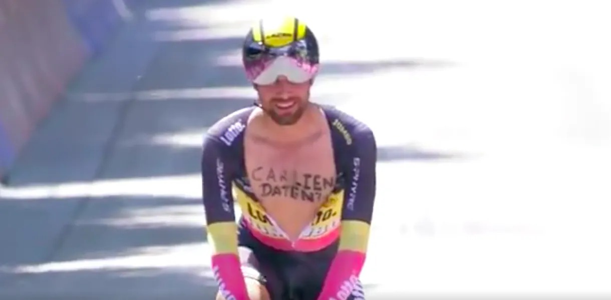

Squadra Molteni elsker fliteri

Giro d’italia, godt orkestreret af UCIs snævertsynethed, mistede sin politiske ukorrekte uskyld forleden dag. Hvordan? Den belgiske enkelstartsmester Victor Campenaerts flitede – og det mente UCI, at det skadede cykelsportens image, og takserede det til en bøde på 100 CHF.

Campenaerts flirtende adfærd bestod i, at han påskrevet på brystet “Carlien daten?”, inviterede en kvinde ud på en date.
Det er sku da både sjovt, romantisk og en hyldest til livet. Det kan jeg godt lide. Hvis der skulle gribes ind over for noget, så var det da de dersens stramme badedragter og uhørlig grimme hjelme – men det er jo en helt anden sag, udtaler Niels Bjørnsteen fra Squadra Moltenis HQ.
Squadra Molteni udsender:
I lyset af ovenstående hændelse, bliver Squadra Moltenis ledelse nød til at udsende følgende:
“Enhver form for fliteri fra en Squadra Molteni rytter, vil blive takseret med anerkendelse. Det er holdets klare opfattelse, at menneskelig interaktion, herunder flirteri, er essentielt. Det styrker ikke kun mennesker, rytteren og holdet – men også cykelsporten.”